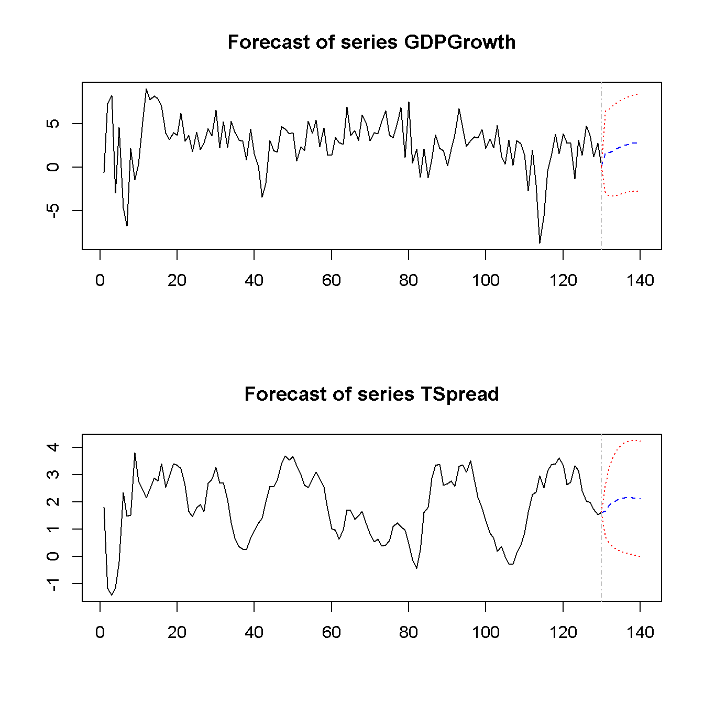

17.1 Autorregresiones vectoriales
Un modelo de Vector autorregresivo (VAR) es útil cuando se está interesado en predecir múltiples variables de series de tiempo usando un solo modelo. En esencia, el modelo VAR es una extensión del modelo autorregresivo univariante que se ha tratado en los capítulos 15 y 16. El concepto clave 16.1 resume los fundamentos del VAR.
Concepto clave
16.1
Autoregresiones vectoriales
El modelo de autorregresión vectorial (VAR) extiende la idea de autorregresión univariante a regresiones de series de tiempo \(k\), donde los valores rezagados de todas \(k\) series aparecen como regresores. Dicho de otra manera, en un modelo VAR se hace una regresión de un vector de variables de series de tiempo en vectores rezagados de estas variables. En cuanto a los modelos AR (\(p\)), el orden de retraso se denota por \(p\) por lo que el modelo VAR (\(p\)) de dos variables \(X_t\) y \(Y_t\) (\(k = 2\)) viene dado por las ecuaciones:
\[\begin{align*} Y_t =& \, \beta_{10} + \beta_{11} Y_{t-1} + \dots + \beta_{1p} Y_{t-p} + \gamma_{11} X_{t-1} + \dots + \gamma_{1p} X_{t-p} + u_{1t}, \\ X_t =& \, \beta_{20} + \beta_{21} Y_{t-1} + \dots + \beta_{2p} Y_{t-p} + \gamma_{21} X_{t-1} + \dots + \gamma_{2p} X_{t-p} + u_{2t}. \end{align*}\]
Los \(\beta\)s y \(\gamma\)s se pueden estimar usando MCO en cada ecuación. Los supuestos para los VAR son los supuestos de series de tiempo presentados en el Concepto clave 14.6 aplicados a cada una de las ecuaciones.
Es sencillo estimar modelos VAR en R. Un enfoque factible es simplemente usar lm() para la estimación de las ecuaciones individuales. Además, el paquete R vars proporciona herramientas estándar para estimación, pruebas de diagnóstico y predicción utilizando este tipo de modelos.
Cuando se cumplen los supuestos del Concepto clave 16.1, los estimadores MCO de los coeficientes VAR son consistentes y conjuntamente normales en muestras grandes, de modo que se pueden utilizar los métodos inferenciales habituales, como los intervalos de confianza y los estadísticos \(t\).
La estructura de los VAR también permite probar conjuntamente las restricciones en múltiples ecuaciones. Por ejemplo, puede ser de interés probar si los coeficientes de todos los regresores del rezago \(p\) son cero. Esto corresponde a probar el nulo de que el orden de retraso \(p-1\) es correcto. La normalidad conjunta de muestras grandes de las estimaciones de coeficientes es conveniente porque implica que simplemente se puede usar una prueba \(F\) para este problema de prueba. La fórmula explícita para un estadístico de prueba de este tipo es bastante complicada, pero afortunadamente estos cálculos se realizan fácilmente utilizando las funciones R con las que se trabaja en este capítulo. Otra forma de determinar las longitudes de retraso óptimas son los criterios de información como \(BIC\) que se ha introducido para las regresiones de series de tiempo univariadas en el Capítulo 15.6. Al igual que en el caso de una sola ecuación, para un modelo de ecuaciones múltiples se elige la especificación que tiene el menor \(BIC(p)\), donde
\[\begin{align*} BIC(p) =& \, \log\left[\text{det}(\widehat{\Sigma}_u)\right] + k(kp+1) \frac{\log(T)}{T}. \end{align*}\]
donde \(\widehat{\Sigma}_u\) denota la estimación de la matriz de covarianza \(k \times k\) de los errores VAR y \(\text{det}(\cdot)\) denota el determinante.
En cuanto a los modelos de rezagos distribuidos univariados, se debe pensar detenidamente en las variables que se incluirán en un VAR, ya que agregar variables no relacionadas reduce la precisión del pronóstico al aumentar el error de estimación. Esto es particularmente importante porque el número de parámetros a estimar crece cuadráticamente al número de variables modeladas por el VAR. En la aplicación siguiente se verá que la teoría económica y la evidencia empírica son útiles para esta decisión.
Un modelo VAR de la tasa de crecimiento del PIB y el margen temporal
Ahora se muestra cómo estimar un modelo VAR de la tasa de crecimiento del PIB, \(GDPGR\), y el diferencial de plazo, \(TSpread\). Como sigue la discusión sobre la no estacionariedad del crecimiento del PIB en el Capítulo 15.7 (recuerde la posible ruptura a principios de la década de 1980 detectada por la estadística de prueba \(QLR\)), se usan datos de 1981:Q1 a 2012:Q4. Las dos ecuaciones del modelo son
\[\begin{align*} GDPGR_t =& \, \beta_{10} + \beta_{11} GDPGR_{t-1} + \beta_{12} GDPGR_{t-2} + \gamma_{11} TSpread_{t-1} + \gamma_{12} TSpread_{t-2} + u_{1t}, \\ TSpread_t =& \, \beta_{20} + \beta_{21} GDPGR_{t-1} + \beta_{22} GDPGR_{t-2} + \gamma_{21} TSpread_{t-1} + \gamma_{22} TSpread_{t-2} + u_{2t}. \end{align*}\]
El conjunto de datos us_macro_quarterly.xlsx se proporciona en el sitio web complementario a Stock and Watson (2015) y se puede descargar aquí. Contiene datos trimestrales sobre el PIB real de EE. UU. (es decir, ajustado a la inflación) de 1947 a 2004. Se comienza importando el conjunto de datos y aplicando un formato (ya se trabajó con este conjunto de datos en el Capítulo 15, por lo que se pueden omitir estos pasos si ya se han cargado los datos en el entorno de trabajo).
# cargar el conjunto de datos macroeconómicos de EE. UU.
USMacroSWQ <- read_xlsx("data/us_macro_quarterly.xlsx",
sheet = 1,
col_types = c("text", rep("numeric", 9)))
# establecer los nombres de las columnas
colnames(USMacroSWQ) <- c("Date", "GDPC96", "JAPAN_IP", "PCECTPI", "GS10",
"GS1", "TB3MS", "UNRATE", "EXUSUK", "CPIAUCSL")
# formatear la columna de fecha
USMacroSWQ$Date <- as.yearqtr(USMacroSWQ$Date, format = "%Y:0%q")
# definir el PIB como objeto ts
GDP <- ts(USMacroSWQ$GDPC96,
start = c(1957, 1),
end = c(2013, 4),
frequency = 4)
# definir el crecimiento del PIB como un objeto ts
GDPGrowth <- ts(400*log(GDP[-1]/GDP[-length(GDP)]),
start = c(1957, 2),
end = c(2013, 4),
frequency = 4)
# tasa de interés de las letras del Tesoro a 3 meses como objeto 'ts'
TB3MS <- ts(USMacroSWQ$TB3MS,
start = c(1957, 1),
end = c(2013, 4),
frequency = 4)
# tasa de interés de los bonos del Tesoro a 10 años como objeto 'ts'
TB10YS <- ts(USMacroSWQ$GS10,
start = c(1957, 1),
end = c(2013, 4),
frequency = 4)
# generar la serie diferencial por plazo
TSpread <- TB10YS - TB3MSSe estiman ambas ecuaciones por separado por MCO y se usa coeftest() para obtener errores estándar robustos.
# estimar ambas ecuaciones usando 'dynlm()'
VAR_EQ1 <- dynlm(GDPGrowth ~ L(GDPGrowth, 1:2) + L(TSpread, 1:2),
start = c(1981, 1),
end = c(2012, 4))
VAR_EQ2 <- dynlm(TSpread ~ L(GDPGrowth, 1:2) + L(TSpread, 1:2),
start = c(1981, 1),
end = c(2012, 4))
# cambiar el nombre de los regresores para una mejor legibilidad
names(VAR_EQ1$coefficients) <- c("Intercept",
"Growth_t-1",
"Growth_t-2",
"TSpread_t-1",
"TSpread_t-2")
names(VAR_EQ2$coefficients) <- names(VAR_EQ1$coefficients)
# resúmenes robustos de coeficientes
coeftest(VAR_EQ1, vcov. = sandwich)
#>
#> t test of coefficients:
#>
#> Estimate Std. Error t value Pr(>|t|)
#> Intercept 0.516344 0.524429 0.9846 0.3267616
#> Growth_t-1 0.289553 0.110827 2.6127 0.0101038 *
#> Growth_t-2 0.216392 0.085879 2.5197 0.0130255 *
#> TSpread_t-1 -0.902549 0.358290 -2.5190 0.0130498 *
#> TSpread_t-2 1.329831 0.392660 3.3867 0.0009503 ***
#> ---
#> Signif. codes: 0 '***' 0.001 '**' 0.01 '*' 0.05 '.' 0.1 ' ' 1
coeftest(VAR_EQ2, vcov. = sandwich)
#>
#> t test of coefficients:
#>
#> Estimate Std. Error t value Pr(>|t|)
#> Intercept 0.4557740 0.1214227 3.7536 0.0002674 ***
#> Growth_t-1 0.0099785 0.0218424 0.4568 0.6485920
#> Growth_t-2 -0.0572451 0.0264099 -2.1676 0.0321186 *
#> TSpread_t-1 1.0582279 0.0983750 10.7571 < 2.2e-16 ***
#> TSpread_t-2 -0.2191902 0.1086198 -2.0180 0.0457712 *
#> ---
#> Signif. codes: 0 '***' 0.001 '**' 0.01 '*' 0.05 '.' 0.1 ' ' 1Se termina con los siguientes resultados:
\[\begin{align*} GDPGR_t =& \, \underset{(0.46)}{0.52} + \underset{(0.11)}{0.29} GDPGR_{t-1} + \underset{(0.09)}{0.22} GDPGR_{t-2} -\underset{(0.36)}{0.90} TSpread_{t-1} + \underset{(0.39)}{1.33} TSpread_{t-2} \\ TSpread_t =& \, \underset{(0.12)}{0.46} + \underset{(0.02)}{0.01} GDPGR_{t-1} -\underset{(0.03)}{0.06} GDPGR_{t-2} + \underset{(0.10)}{1.06} TSpread_{t-1} -\underset{(0.11)}{0.22} TSpread_{t-2} \end{align*}\]
La función VAR() se puede utilizar para obtener las mismas estimaciones de coeficientes que se presentaron anteriormente, ya que también se aplica MCO por ecuación.
# configurar datos para la estimación usando `VAR()`
VAR_data <- window(ts.union(GDPGrowth, TSpread), start = c(1980, 3), end = c(2012, 4))
# estimar los coeficientes del modelo usando `VAR()`
VAR_est <- VAR(y = VAR_data, p = 2)
VAR_est
#>
#> VAR Estimation Results:
#> =======================
#>
#> Estimated coefficients for equation GDPGrowth:
#> ==============================================
#> Call:
#> GDPGrowth = GDPGrowth.l1 + TSpread.l1 + GDPGrowth.l2 + TSpread.l2 + const
#>
#> GDPGrowth.l1 TSpread.l1 GDPGrowth.l2 TSpread.l2 const
#> 0.2895533 -0.9025493 0.2163919 1.3298305 0.5163440
#>
#>
#> Estimated coefficients for equation TSpread:
#> ============================================
#> Call:
#> TSpread = GDPGrowth.l1 + TSpread.l1 + GDPGrowth.l2 + TSpread.l2 + const
#>
#> GDPGrowth.l1 TSpread.l1 GDPGrowth.l2 TSpread.l2 const
#> 0.009978489 1.058227945 -0.057245123 -0.219190243 0.455773969VAR() devuelve una lista de objetos lm que se pueden pasar a las funciones habituales, por ejemplo summary() y, por lo tanto, es sencillo obtener estadísticas del modelo para el ecuaciones individuales.
# obtener el R^2 ajustado de la salida de 'VAR()'
summary(VAR_est$varresult$GDPGrowth)$adj.r.squared
#> [1] 0.2887223
summary(VAR_est$varresult$TSpread)$adj.r.squared
#> [1] 0.8254311Se pueden utilizar los objetos del modelo individual para realizar pruebas de causalidad de Granger.
# Pruebas de causalidad de Granger:
# probar si el diferencial de plazo no tiene poder para explicar el crecimiento del PIB
linearHypothesis(VAR_EQ1,
hypothesis.matrix = c("TSpread_t-1", "TSpread_t-2"),
vcov. = sandwich)
#> Linear hypothesis test
#>
#> Hypothesis:
#> TSpread_t - 0
#> TSpread_t - 2 = 0
#>
#> Model 1: restricted model
#> Model 2: GDPGrowth ~ L(GDPGrowth, 1:2) + L(TSpread, 1:2)
#>
#> Note: Coefficient covariance matrix supplied.
#>
#> Res.Df Df F Pr(>F)
#> 1 125
#> 2 123 2 5.9094 0.003544 **
#> ---
#> Signif. codes: 0 '***' 0.001 '**' 0.01 '*' 0.05 '.' 0.1 ' ' 1
# probar si el crecimiento del PIB no tiene poder para explicar el diferencial de plazo
linearHypothesis(VAR_EQ2,
hypothesis.matrix = c("Growth_t-1", "Growth_t-2"),
vcov. = sandwich)
#> Linear hypothesis test
#>
#> Hypothesis:
#> Growth_t - 0
#> Growth_t - 2 = 0
#>
#> Model 1: restricted model
#> Model 2: TSpread ~ L(GDPGrowth, 1:2) + L(TSpread, 1:2)
#>
#> Note: Coefficient covariance matrix supplied.
#>
#> Res.Df Df F Pr(>F)
#> 1 125
#> 2 123 2 3.4777 0.03395 *
#> ---
#> Signif. codes: 0 '***' 0.001 '**' 0.01 '*' 0.05 '.' 0.1 ' ' 1Ambas pruebas de causalidad de Granger se rechazan al nivel de \(5\%\). Esto es evidencia a favor de la conjetura de que el diferencial por plazo tiene poder para explicar el crecimiento del PIB y viceversa.
Pronósticos multivariados iterados usando un VAR iterado
La idea de un pronóstico iterado para el período \(T + 2\) basado en observaciones hasta el período \(T\) es utilizar el pronóstico de un período adelantado como paso intermedio; es decir, el pronóstico para el período \(T + 1\) se usa como una observación al predecir el nivel de una serie para el período \(T + 2\). Esto se puede generalizar a un pronóstico de \(h\) para el período futuro en el que todos los períodos intermedios entre \(T\) y \(T + h\) deben pronosticarse, ya que se utilizan como observaciones en el proceso. Los pronósticos iterados de múltiples períodos se resumen en el Concepto clave 16.2.
Concepto clave
16.2
Pronósticos de varios períodos iterados
Los pasos para un pronóstico de RA iterado de varios períodos son:
Estimar el modelo AR (\(p\)) usando MCO y calcular el pronóstico de un período adelantado.
Utilizar el pronóstico de un período adelantado para obtener el pronóstico de dos períodos adelante.
Continuar iterando para obtener pronósticos más lejanos en el futuro.
Un pronóstico VAR iterado de múltiples períodos se realiza de la siguiente manera:
Estimar el modelo VAR (\(p\)) usando MCO por ecuación y calcular el pronóstico de un período adelantado para todas las variables en el VAR.
Utilizar los pronósticos de un período por delante para obtener los pronósticos de dos períodos adelante.
Continuar iterando para obtener pronósticos de todas las variables en el VAR en el futuro.
Dado que un VAR modela todas las variables usando rezagos de las otras variables respectivas, se necesitan calcular pronósticos para todas las variables. Puede resultar engorroso hacerlo cuando el VAR es grande, pero afortunadamente existen funciones R que facilitan esto. Por ejemplo, la función predict() se puede utilizar para obtener pronósticos multivariados iterados para modelos VAR estimados por la función VAR().
El siguiente fragmento de código muestra cómo calcular pronósticos iterados para el crecimiento del PIB y el diferencial por plazo hasta el período 2015:Q1, que es \(h = 10\), utilizando el objeto modelo VAR_est.
# calcular pronósticos iterados para el crecimiento del PIB y el diferencial por plazo para los próximos 10 trimestres
forecasts <- predict(VAR_est)
forecasts
#> $GDPGrowth
#> fcst lower upper CI
#> [1,] 1.738653 -3.006124 6.483430 4.744777
#> [2,] 1.692193 -3.312731 6.697118 5.004925
#> [3,] 1.911852 -3.282880 7.106583 5.194731
#> [4,] 2.137070 -3.164247 7.438386 5.301317
#> [5,] 2.329667 -3.041435 7.700769 5.371102
#> [6,] 2.496815 -2.931819 7.925449 5.428634
#> [7,] 2.631849 -2.846390 8.110088 5.478239
#> [8,] 2.734819 -2.785426 8.255064 5.520245
#> [9,] 2.808291 -2.745597 8.362180 5.553889
#> [10,] 2.856169 -2.722905 8.435243 5.579074
#>
#> $TSpread
#> fcst lower upper CI
#> [1,] 1.676746 0.708471226 2.645021 0.9682751
#> [2,] 1.884098 0.471880228 3.296316 1.4122179
#> [3,] 1.999409 0.336348101 3.662470 1.6630609
#> [4,] 2.080836 0.242407507 3.919265 1.8384285
#> [5,] 2.131402 0.175797245 4.087008 1.9556052
#> [6,] 2.156094 0.125220562 4.186968 2.0308738
#> [7,] 2.161783 0.085037834 4.238528 2.0767452
#> [8,] 2.154170 0.051061544 4.257278 2.1031082
#> [9,] 2.138164 0.020749780 4.255578 2.1174139
#> [10,] 2.117733 -0.007139213 4.242605 2.1248722Esto revela que el pronóstico de dos trimestres de crecimiento del PIB en 2013:Q2 utilizando datos hasta 2012:Q4 es \(1.69\). Para el mismo período, el pronóstico de VAR iterado para el diferencial de plazo es \(1.88\).
Las matrices devueltas por predict(VAR_est) también incluyen intervalos de predicción de \(95\%\) (sin embargo, la función no se ajusta para la autocorrelación o heterocedasticidad de los errores).
También se pueden trazar los pronósticos iterados para ambas variables llamando a plot() en la salida de predict(VAR_est).
# visualizar los pronósticos iterados
plot(forecasts)
Pronósticos directos para múltiples períodos
Un pronóstico directo de múltiples períodos utiliza un modelo en el que los predictores se retrasan de manera adecuada, de modo que las observaciones disponibles se puedan usar directamente para realizar el pronóstico. La idea de la predicción directa de varios períodos se resume en el Concepto clave 16.3.
Concepto clave
16.3
Pronósticos directos para múltiples períodos
Un pronóstico directo para períodos múltiples que pronostica períodos de \(h\) en el futuro utilizando un modelo de \(Y_t\) y un predictor adicional \(X_t\) con retrasos de \(p\) se realiza estimando primero:
\[\begin{align*} Y_t =& \, \delta_0 + \delta_1 Y_{t-h} + \dots + \delta_{p} Y_{t-p-h+1} + \delta_{p+1} X_{t-h} \\ +& \dots + \delta_{2p} Y_{t-p-h+1} + u_t, \end{align*}\]
que luego se usa para calcular el pronóstico de \(Y_{T + h}\) basado en observaciones durante el período \(T\).
Por ejemplo, para obtener previsiones de dos trimestres de crecimiento del PIB y el margen de plazo, primero se estiman las ecuaciones:
\[\begin{align*} GDPGR_t =& \, \beta_{10} + \beta_{11} GDPGR_{t-2} + \beta_{12} GDPGR_{t-3} + \gamma_{11} TSpread_{t-2} + \gamma_{12} TSpread_{t-3} + u_{1t}, \\ TSpread_t =& \, \beta_{20} + \beta_{21} GDPGR_{t-2} + \beta_{22} GDPGR_{t-3} + \gamma_{21} TSpread_{t-2} + \gamma_{22} TSpread_{t-3} + u_{2t} \end{align*}\]
y luego se sustituyen los valores de \(GDPGR_{2012:Q4}\), \(GDPGR_{2012:Q3}\), \(TSpread_{2012:Q4}\) y \(TSpread_{2012:Q3}\) en ambas ecuaciones. Esto se hace fácilmente de forma manual.
# modelos de estimación para pronósticos directos a dos trimestres
VAR_EQ1_direct <- dynlm(GDPGrowth ~ L(GDPGrowth, 2:3) + L(TSpread, 2:3),
start = c(1981, 1), end = c(2012, 4))
VAR_EQ2_direct <- dynlm(TSpread ~ L(GDPGrowth, 2:3) + L(TSpread, 2:3),
start = c(1981, 1), end = c(2012, 4))
# calcular pronósticos directos a dos trimestres
coef(VAR_EQ1_direct) %*% c(1, # intercepto
window(GDPGrowth, start = c(2012, 3), end = c(2012, 4)),
window(TSpread, start = c(2012, 3), end = c(2012, 4)))
#> [,1]
#> [1,] 2.439497
coef(VAR_EQ2_direct) %*% c(1, # intercepto
window(GDPGrowth, start = c(2012, 3), end = c(2012, 4)),
window(TSpread, start = c(2012, 3), end = c(2012, 4)))
#> [,1]
#> [1,] 1.66578Los economistas aplicados a menudo usan el método iterado, ya que estos pronósticos son más confiables en términos de \(MSFE\), siempre que el modelo de un período adelantado se especifique correctamente. Si este no es el caso, por ejemplo, porque se cree que una ecuación en un VAR está mal especificada, puede ser beneficioso usar pronósticos directos, ya que el método iterado estará sesgado y, por lo tanto, tendrá un \(MSFE\) más alto que el método directo. Consulte el Capítulo 17.2 para obtener una discusión más detallada sobre las ventajas y desventajas de ambos métodos.